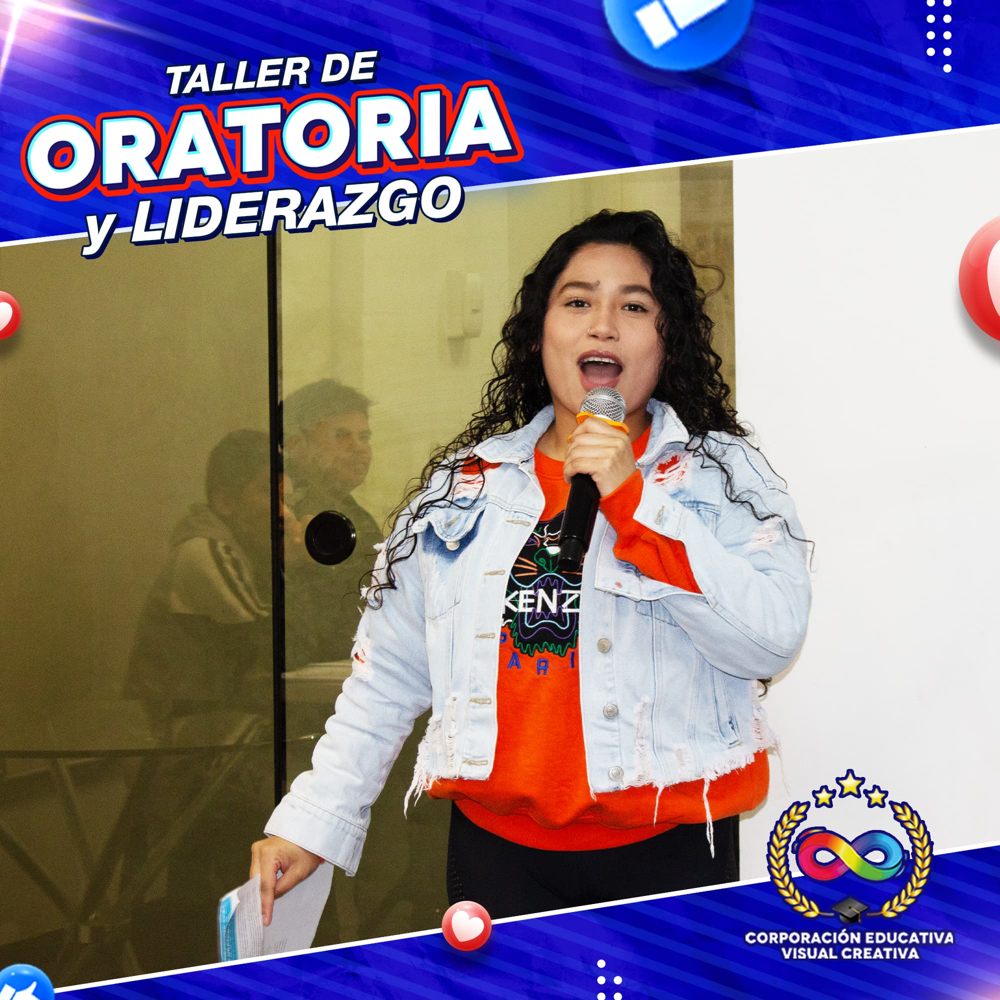
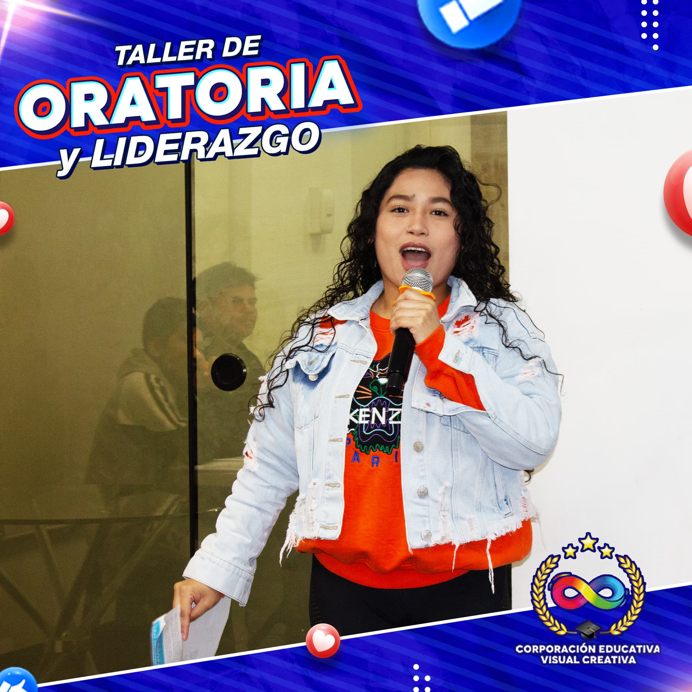

🎤
MISIÓN
Generar seguridad, elocuencia y dominio del discurso para que las personas se desenvuelvan con eficiencia, mayor autoestima y éxito en contextos públicos y profesionales (formación 100% presencial).
Programa práctico 100% presencial para superar el miedo a hablar en público, estructurar mensajes claros y desarrollar tu desempeño escénico con acompañamiento semanal.

Generar seguridad, elocuencia y dominio del discurso para que las personas se desenvuelvan con eficiencia, mayor autoestima y éxito en contextos públicos y profesionales (formación 100% presencial).
Ser líderes en la formación de oradores competentes y seguros para 2027, contribuyendo al crecimiento personal y profesional de nuestros estudiantes a través del dominio de la oratoria.
Práctica semanal frente a pares, retroalimentación positiva y desarrollo de confianza, persuasión, liderazgo y comunicación efectiva.
Identificas temores y ejecutas tu primera intervención corta.
Gancho, cuerpo y cierre con manejo del tiempo.
Postura, gestualidad, mirada y uso del espacio.
Convences con historias y técnicas de influencia ética.
Charla completa ante público. Feedback y certificado.
 

Inicio: 04 Nov 2025
Días: Mar & Jue · 04:00–06:00
Apartar cupoInicio: 04 Nov 2025
Días: Sábados · 06:00–08:00
Apartar cupoCoach de oratoria y liderazgo. 8+ años formando speakers.